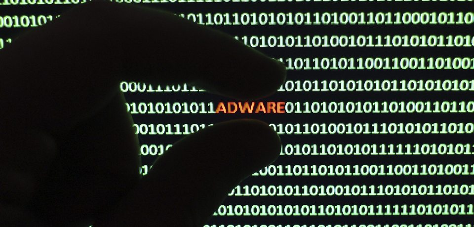

PCSAFETY
Вирус - Adware (Рекламный вирус)
Adware-программы, которые собирают данные с вашего согласия, не следует путать с троянскими программами-шпионами, которые собирают информацию без вашего разрешения и ведома. Если Adware-программа не уведомляет о сборе информации, она считается вредоносной, например, вредоносная программа троянец-шпион (Trojan-Spy). За исключением показа рекламы и сбора данных такие программы, как правило, не проявляют своего присутствия в системе. Обычно у такой программы отсутствует значок на панели задач, и в меню программ она тоже отсутствует.
Adware-программы могут попасть на ваш компьютер двумя основными путями. С бесплатным или условно-бесплатным программным обеспечением Adware-программы могут входить на вполне законных основаниях в состав некоторых бесплатных или условно-бесплатных программ в качестве рекламной составляющей. Доходы от такой рекламы помогают финансировать их разработку. Посещение зараженного веб-сайта может привести к несанкционированной установке Adware-программы на ваш компьютер. В этих целях часто используются хакерские технологии. Например, для проникновения на компьютер может использоваться уязвимость браузера и троянская программа, предназначенная для незаметной установки Adware. Действующие таким образом Adware-программы часто называют Browser Hijackers.